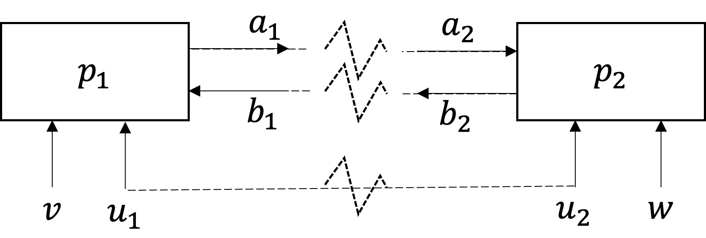

Getting started#
Installation#
DMDO needs Python 3.10 or newer.
From the Python Package Index:
$ pip install DMDO
To install from source and run the test suite:
$ git clone https://github.com/Ahmed-Bayoumy/DMDO.git
$ cd DMDO
$ pip install -e .
$ pytest tests
DMDO uses OMADS [Bayoumy, 2022] for its derivative-free subproblem
solvers and SciPy for the gradient-based ones, together with numpy, pandas and pyyaml. Installing DMDO
also installs the dmdo command of the optional HTTP service (The HTTP service and remote workers).
A first problem#
The example below is the basic two-discipline problem (1) used throughout this documentation. Its two analyses are coupled in both directions: \(a\) depends on \(b\), and \(b\) depends on \(a\).


Figure 2 The basic problem partitioned into two subproblems. Each keeps its own copies of the shared variable \(u\) and of the coupling variables \(a\) and \(b\).#
DMDO solves it as two subproblems. Subproblem 1 owns \(v\) and computes \(a\); subproblem 2 owns \(w\), computes \(b\) and holds the constraint. Each one keeps a copy of \(u\), \(a\) and \(b\), and the coordinator drives the copies to agreement (see Background).
A run takes three steps:
write the analyses (one per discipline) and the subproblem objectives as Python callables;
describe the problem in a YAML file (or a dictionary): variables, analyses, subproblems and coordinator;
build a
Sessionand run it.
import numpy as np
from DMDO import Session
def A1(x): # x = [u, v, b] -> [a]
x = np.maximum(x, 1e-12)
return [np.log10(x[0]) + np.log10(x[1]) + np.log10(x[2])]
def A2(x): # x = [u, w, a] -> [b]
x = np.maximum(x, 1e-12)
return [1 / x[0] + 1 / x[1] + 1 / x[2]]
def opt1(x, y, c=None): # x = [u, v, b], y = [a]
return [sum(x) + y[0], [0.0]]
def opt2(x, y, c=None): # x = [u, w, a], y = [b]
return [0.0, [x[1] + y[0] - 10.0]]
if __name__ == "__main__":
session = Session.from_yaml("basic_problem.yaml", working_dir="runs",
blackboxes={"A1": A1, "A2": A2, "opt1": opt1, "opt2": opt2})
result = session.run()
print(result.status, result.stop_reason)
print("objective:", result.objective, "max. inconsistency:", result.max_inconsistency)
print(result.variables)
result is a RunResult: the final status and stopping reason, the objective of the master
subproblem, the maximum inconsistency between copies, every variable copy and the per-iteration history.
result.to_dict() gives the same content as plain JSON-ready values.
Important
Guard the call with if __name__ == "__main__": in scripts. Parallel runs use multiprocessing, and on
Windows and macOS worker processes re-import your script.
The problem definition#
basic_problem.yaml (shipped in the examples folder of the repository) describes the variables, the analyses,
how analyses are grouped per subproblem, the coordinator and the subproblems:
# The basic MDO problem
variables:
# vs: [name, SP_index, Link, coupling type, lb, bl, ub, dim]
v0: ["u", 1, 2, s, 0., 1., 10., 1, 'REAL']
v1: ["v", 1, None, u, 0., 1., 10., 1, 'REAL']
v2: ["a", 1, 2, ff, 0., 1., 10., 1, 'REAL']
v3: ["b", 1, 2, fb, 0., 1., 10., 1, 'REAL']
v4: ["u", 2, 1, s, 0., 1., 10., 1, 'REAL']
v5: ["w", 2, None, u, 0., 1., 10., 1, 'REAL']
v6: ["a", 2, 1, fb, 0., 1., 10., 1, 'REAL']
v7: ["b", 2, 1, ff, 0., 1., 10., 1, 'REAL']
DA:
DA1:
index: 1
inputs: [v0, v1, v3]
outputs: [v2]
blackbox: A1
type: callable
links: 2
coupling_type: ff
DA2:
index: 2
inputs: [v4, v5, v6]
outputs: [v7]
blackbox: A2
type: callable
links: 2
coupling_type: ff
MDA:
MDA1:
index: 1
nAnalyses: 1
analyses: [1]
variables: [v0, v1, v3]
responses: [v2]
MDA2:
index: 2
nAnalyses: 1
analyses: [2]
variables: [v4, v5, v6]
responses: [v7]
coord:
c1:
index: 1
type: ADMM
beta: 1.3
gamma: 0.5
nsp: 2
budget: 50
index_of_master_SP: 1
display: True
scaling: 0.1
mode: serial
M_update_scheme: normal
store_q_io: True
subproblem:
sp1:
nv: 3
index: 1
vars: [v0, v1, v3]
resps: [v2]
is_main: True
MDA: 1
coordinator: 1
opt: opt1
type: callable
fmin_nop: inf
solver: poll
budget: 150
display: False
psize: 1.
pupdate: Last
freal: 2.625
sp2:
nv: 3
index: 2
vars: [v4, v5, v6]
resps: [v7]
is_main: False
MDA: 2
coordinator: 1
opt: opt2
type: callable
fmin_nop: inf
solver: poll
budget: 150
display: False
psize: 1.
pupdate: Last
USER:
MDO:
architecture: IDF
coordinator: 1
subproblems: [1, 2]
responses: [v2, v7]
fmin: inf
hmin: inf
display: True
inc_stop: 0.0000000001
stop: "Iteration budget exhausted"
tab_inc: []
noprogress_stop: 100
variablesOne row per variable copy:
[name, subproblem, linked subproblem, coupling, lb, baseline, ub, dim, type].uappears twice, once in each subproblem, linked to the other one;vandware local (u, uncoupled). The coupling codes ares(shared variable),ff/fb(feed-forward and feedback coupling variables),u(local) andCP(constant parameter).DAThe disciplinary analyses: which variables they read, which they compute, and the name of the callable that does it (
blackbox).MDAThe analyses evaluated inside each subproblem and the variables they exchange with it.
coordThe coordinator: penalty growth factor
beta, number of subproblems, outer-iterationbudget, the master subproblem (the one that holds the system objective) and the penalty-weight update scheme.subproblemEach subproblem’s design variables (
vars), responses (resps), objective callable (opt), inner solver and inner evaluation budget.MDOThe overall run: coordinator, subproblems, stopping tolerance
inc_stopon the inconsistency and console output.
Problem definition lists every key and its default.
The analysis and objective contract#
Analyses receive their inputs as a list ordered like the inputs of their DA entry and return a list of
outputs ordered like its outputs. An analysis may also be any object with a compute(inputs) -> outputs
method working on dictionaries keyed by variable name (a Discipline), which is the natural way to
wrap a simulation or a model from another framework:
class A1:
def compute(self, inputs): # inputs = {"u": ..., "v": ..., "b": ...}
return {"a": np.log10(inputs["u"]) + np.log10(inputs["v"]) + np.log10(inputs["b"])}
Subproblem objectives receive the subproblem’s design vector x (ordered like vars), the responses y
of its analyses (ordered like resps) and, optionally, constant parameters c. They return
[f, [g1, g2, ...]]: the local objective and the local constraints in the form \(g_i \le 0\). Subproblems
without a local objective return 0; subproblems without constraints return [0].
Callables are referenced by name in the problem definition. Names are resolved from the blackboxes mapping
given to the session, then from the global registry (DMDO.register_blackbox()), then as an import path such as
"my_package.aero:lift".
Where to go next#
The basic problem from YAML runs this problem step by step and explains its output files.
The Sellar problem solves the Sellar problem with three different inner solvers.
The Session API drives a run one iteration at a time and solves the subproblems from outside.
Background explains the formulation the coordinator solves.